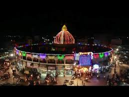

Ashtavinayak Temple
Shri Ashtavinayak Mandir is a magnificent temple and a great place to visit near Latur. It has a South Indian influence and looks more like a South Indian-style temple. It has gardens with artificial fountain giving it a very elegant and attractive look.

Ganj Golai
Ganj Golai is the temple of Goddess Jagadamba designed by Shri Faiyajuddin. More than a hundred years old, Ganj Golai is believed to be one of the most historic constructions in the Latur city. The magnificent and unique architecture of this temple is a spectacle to behold.